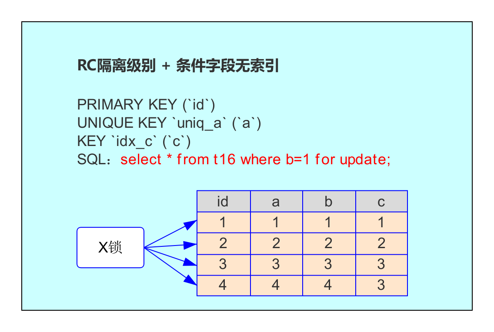
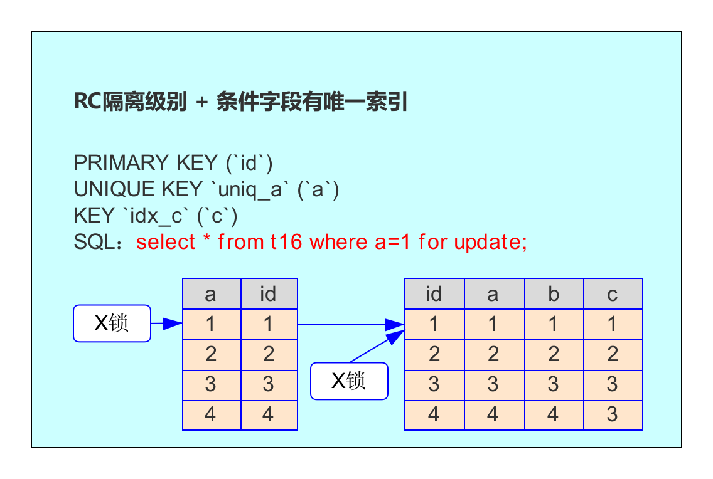
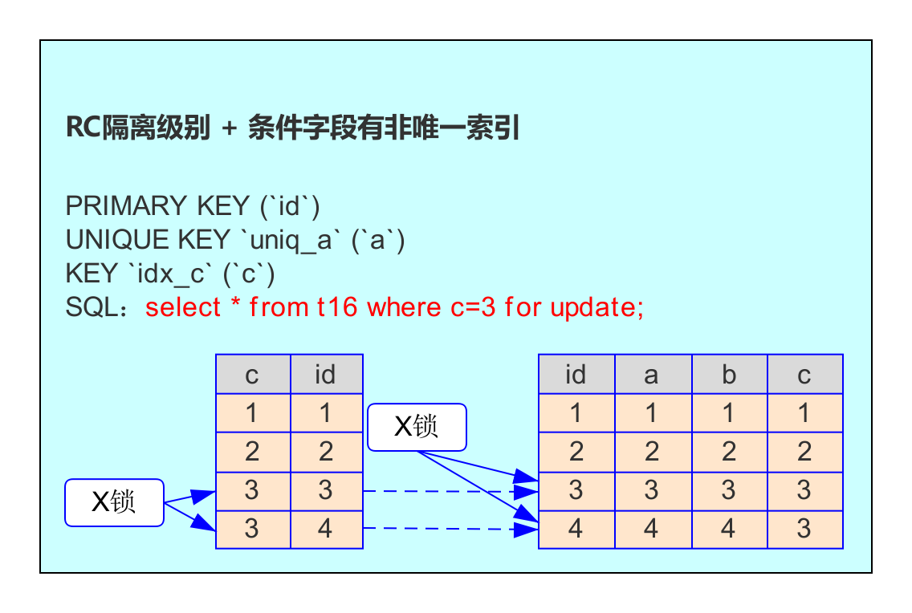

前言
MySQL 5.5 之前的默认存储引擎是 MyISAM，5.5 之后改成了 InnoDB。InnoDB 后来居上最主要的原因就是：
- InnoDB 支持事务：适合在并发条件下要求数据一致的场景。
- InnoDB 支持行锁：有效降低由于删除或者更新导致的锁定。
本节就一起来探讨 InnoDB 的行锁。
在讲解行锁之前，我们首先来看一下两阶段锁协议。
两阶段锁
传统的关系型数据库加锁的一个原则是：两阶段锁原则。
两阶段锁：锁操作分为两个阶段，加锁阶段和解锁阶段，并且保证加锁阶段和解锁阶段不相交。
我们可以通过下面这张表理解两阶段锁：
| 序号 | MySQL 操作 | 解释 | 锁阶段 |
|---|---|---|---|
| 1 | begin; | 事务开始 | |
| 2 | insert into …; | 加 insert 对应的锁 | 加锁阶段 |
| 3 | update table …; | 加 update 对应的锁 | 加锁阶段 |
| 4 | delete from …; | 加 delete 对应的锁 | 加锁阶段 |
| 5 | commit; | 事务结束，同时释放 2、3、4 步骤中加的锁 | 解锁阶段 |
InnoDB 行锁模式
InnoDB 实现了以下两种类型的行锁：
- 共享锁（S）：允许一个事务去读一行，阻止其它事务获得相同数据集的排他锁；
- 排他锁（X）：允许获得排他锁的事务更新数据，阻止其它事务取得相同数据集的共享读锁和排他写锁。
对于普通 select 语句，InnoDB 不会加任何锁，事务可以通过以下语句显式给记录集加共享锁或排他锁：
- 共享锁（S）：select * from table_name where … lock in share mode;
- 排他锁（X）：select * from table_name where … for update。
InnoDB 行锁算法
InnoDB 行锁的三种算法：
- Record Lock：单个记录上的索引加锁。
- Gap Lock：间隙锁，对索引项之间的间隙加锁，但不包括记录本身。
- Next-Key Lock：Gap Lock + Record Lock，锁定一个范围，并且锁定记录本身。
InnoDB 行锁实现特点意味着：如果不通过索引条件检索数据，那么 InnoDB 将对表中所有记录加锁，实际效果跟表锁一样。
事务隔离级别
不同事务隔离级别对应的行锁也是不一样的，因此在讲解行锁的锁定范围之前，先简单聊聊事务隔离级别。事务隔离级别的详细介绍放在下一章。
MySQL 的 4 种隔离级别：
- Read uncommitted（读未提交）: 在该隔离级别，所有事务都可以看到其它未提交事务的执行结果。可能会出现脏读。
- Read Committed（读已提交，简称： RC）：一个事务只能看见已经提交事务所做的改变。因为同一事务的其它实例在该实例处理期间可能会有新的 commit，所以可能出现幻读。
- Repeatable Read（可重复读，简称：RR）：这是 MySQL 的默认事务隔离级别，它确保同一事务的多个实例在并发读取数据时，会看到同样的数据行。消除了脏读、不可重复读，默认也不会出现幻读。
- Serializable（串行）：这是最高的隔离级别，它通过强制事务排序，使之不可能相互冲突，从而解决幻读问题。
这里解释一下脏读和幻读：
- 脏读：读取未提交的事务。
- 幻读：一个事务按相同的查询条件重新读取以前检索过的数据，却发现其他事务插入了满足其查询条件的新数据。
RC 隔离级别下的行锁实验
有时我们可能会思考，某条语句（类似 select * from table_name where a=… for update;）是怎么加锁的？
要想分析某条 SQL 是怎么加锁的，如果其他信息都不知道，那就得分几种情况了，不同情况加锁的方式也各不一样，比较常见的一些情况如下：
- RC 隔离级别，a 字段没索引。
- RC 隔离级别，a 字段有唯一索引。
- RC 隔离级别，a 字段有非唯一索引。
- RR 隔离级别，a 字段没索引。
- RR 隔离级别，a 字段有唯一索引。
- RR 隔离级别，a 字段有非唯一索引。
- …
Read uncommitted 和 Serializable 这两种隔离级别在生产环境基本不用，就不做分析了。
我们先验证 RC 隔离级别下的几种情况，RR 隔离级别的实验放在下节：
首先创建测试表及写入数据:
1 | use muke; |
让我们开始实验吧！
通过非索引字段查询
我们首先来看一下条件字段不使用索引的例子：
| session1 | session2 |
|---|---|
| set session transaction_isolation=‘READ-COMMITTED’;/* 设置会话隔离级别为 RC*/ | set session transaction_isolation=‘READ-COMMITTED’;/ 设置会话隔离级别为 RC\/ |
| begin; | |
| use muke; select * from t16 where b=1 for update; … 1 row in set (0.00 sec) | |
| use muke; select from t16 where b=2 for update; *（等待） | |
| commit; | select * from t16 where b=2 for update; … 1 row in set (6.81 sec) （session1 执行 commit 后立马返回结果） |
这里解释一下为什么要用 for update？
我们常使用的查询语句，比如 select * from t16 where b=1 属于快照读，是不会看到别的事务插入的数据的。
而在查询语句后面加了 for update 显式给记录集加了排他锁，也就让查询变成了当前读。插入、更新、删除操作，都属于当前读。其实也就可以理解 select … for update 是为了让普通查询获得插入、更新、删除操作时所获得的锁。
表面看起来 session1 只给了 b=1 这一行加了排他锁，但 session2 在请求其它行的排他锁时，却出现了锁等待。看下图：
由于 b 字段没有索引，因此只能走聚簇索引，进行全表扫描。从上图中可以看到，满足条件的记录有一条，但是聚簇索引上的所有记录，都被加上了 X 锁。
为什么不是只在满足条件的记录上加锁呢？
这是因为在 MySQL 中，如果一个条件无法通过索引快速过滤，那么存储引擎层面就会将所有记录加锁后返回，然后由 server 层进行过滤。因此也就把所有记录都锁上了。
当然 MySQL 在这里有一些改进的，在 server 层过滤掉不满足条件的数据后，会把不满足条件的记录放锁。保证了最后只会持有满足条件的锁，但是每条记录的加锁操作还是不会省略。
总结：没有索引的情况下，InnoDB 的当前读会对所有记录都加锁。所以在工作中应该特别注意 InnoDB 这一特性，否则可能会产生大量的锁冲突。
通过唯一索引查询
我们再来看一下条件字段有唯一索引的例子：
| session1 | session2 |
|---|---|
| set session transaction_isolation=‘READ-COMMITTED’;/* 设置会话隔离级别为 RC*/ | set session transaction_isolation=‘READ-COMMITTED’;/* 设置会话隔离级别为 RC*/ |
| begin; use muke; select * from t16 where a=1 for update; … 1 row in set (0.00 sec) | |
| use muke; select * from t16 where a=2 for update; … 1 row in set (0.00 sec) | |
| select * from t16 where a=1 for update; （等待） | |
| commit; | select * from t16 where a=1 for update; … 1 row in set (4.70 sec) （session1 提交后，马上返回结果） |
session1 给了 a=1 这一行加了排他锁，在 session2 中请求其他行的排他锁时，不会发生等待；但是在 session2 中请求 a=1 这一行的排他锁时，会发生等待。看下图：

由于 a 是唯一索引，因此 select * from t16 where a=1 for update；(后面称为 SQL2) 语句会选择走 a 列的索引进行条件过滤，在找到 a=1 的记录后，会将唯一索引上 a=1 索引记录上加 X 锁，同时，会根据读取到的 id 列，回到聚簇索引，然后将 id=1 对应的聚簇索引项加 X 锁。
为什么聚簇索引上的记录也要加锁呢？
比如，并发的一条 SQL，是通过主键索引来更新：update t16 set b=10 where id =1; 如果 SQL2 没有将主键索引上的记录加锁，那么并发的 update 并不知道 SQL2 在执行，所以如果 update 执行了，就违背了同一记录上的更新或者删除需要串行执行的约束。
总结：如果查询的条件是唯一索引，那么 SQL 需要在满足条件的唯一索引上加锁，并且会在对应的聚簇索引上加锁。
通过非唯一索引查询
我们再来看一下条件字段有非唯一索引的例子：
| session1 | session2 | session3 |
|---|---|---|
| set session transaction_isolation=‘READ-COMMITTED’;/* 设置会话隔离级别为 RC*/ | set session transaction_isolation=‘READ-COMMITTED’;/* 设置会话隔离级别为 RC*/ | set session transaction_isolation=‘READ-COMMITTED’;/* 设置会话隔离级别为 RC*/ |
| begin; | ||
| use muke; select * from t16 where c=3 for update; … 2 rows in set (0.00 sec) | ||
| use muke; select * from t16 where a=1 for update; … 1 row in set (0.00 sec) | use muke; select * from t16 where a=2 for update; … 1 row in set (0.00 sec) | |
| select * from t16 where a=3 for update; (等待) | select * from t16 where a=4 for update; (等待) | |
| commit; | select * from t16 where a=3 for update; … (session1 提交后，马上返回结果) | select * from t16 where a=4 for update; … (session1 提交后，马上返回结果) |
我们在满足条件 c=3 的数据上加了排他锁，如上面结果，就是第 3、4 行。因此第 1、2 行的数据没被锁，而 3、4 行的数据被锁了。如下图：
通过上图可以看到，在 a 字段的非唯一索引上，满足 c=3 的所有记录，都被加了锁。同时，对应的主键索引上的记录也都加上了锁。与通过唯一索引查询的情况相比，唯一索引查询最多有一行记录被锁，而非唯一索引将会把满足条件的所有记录都加上锁。
总结：如果查询的条件是非唯一索引，那么 SQL 需要在满足条件的非唯一索引上都加上锁，并且会在它们对应的聚簇索引上加锁。
总结
今天我们聊了一下 InnoDB 行锁，这是 InnoDB 替代 MyISAM（只支持表锁）的一个比较重要的原因。
在文稿的开始，跟大家讲解了两阶段锁、行锁模式、行锁算法以及事务隔离级别等。
我们做了 RC 隔离级别下不同场景的行锁实验，比较重要的一点是：在更新数据时，如果条件字段没索引，则表中所有记录都会被加上 X 锁。所以在工作中应该尽可能的让查询走索引。
参考资料
何登成的 github：https://github.com/hedengcheng/tech/tree/master/database/MySQL。
《深入浅出 MySQL》（第 2 版）：20.3.4 InnoDB 行锁实现方式。

...
...
This is copyright.